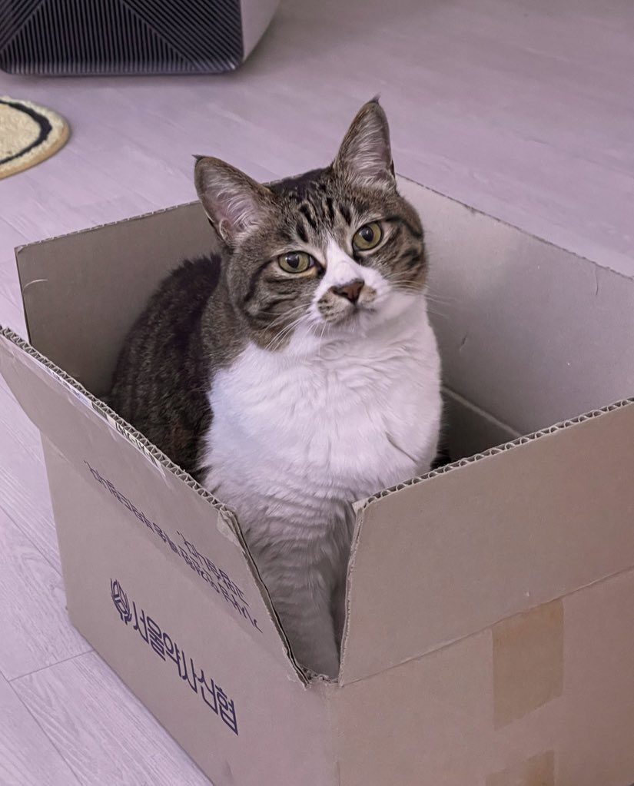

안녕하세요!
“
밈(Meme)친자 오이데
”
밈(Meme)친자 오이데
개발 지옥에서 누가 돌아왔~게
”
안녕하세요. 수많은 정보의 파도 속에서 웃음을 사냥하고,
오직 귀여움과 재미에 몰입하는 사람입니다.

01 / WHO I AM
안녕하세요, 공준식 입니다
평범하지만 조금만 더 천천히, 조금만 더 귀엽게, 조금만 더 재밌게.
인터넷 세상의 위트 넘치는 드립을 수집하며 영감을 얻는 것을 즐깁니다.
하지만 조금 마이너 할지도.
난 역시 비주류야 키킥.
이메일
kongjunsic2@gmail.com
위치
Suwon, South Korea
주요 역할
Content Surfer. 즉, 유튜브 보는 백수
메이트
반려묘 아라 🐾
02 / MY FAVORITES
나의 취향
03 / MY CAT
여러분 제 고양이 좀 보세요
아라냥이 🐾
"저희 집 고영희 '아라'입니다. 나이는 13살(추정), 1-2세령에 길에서 구조되었어요. 길 생활을 한 것치곤 꽤나 사람을 좋아하고 낯선 사람이 와도 숨지 않는답니다. 나이가 들어 차분한 일상을 즐기지만 아직 건강에는 아무 이상 없어요. 다행이죠?"
"물도 잘 먹고 밥도 잘 먹고 운동은 일절 안 하지만, 매일 밤 침대 맡에서 잘 자라고 골골송 인사를 건네주는 무척 착하고 소중한 반려 가족이랍니다."
카드를 클릭해 보세요

